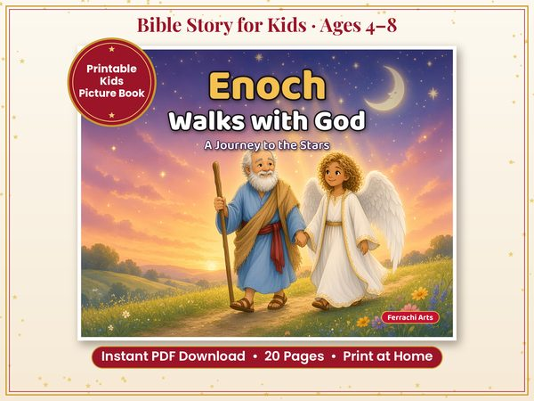

Book 1 · English · $5.99
Enoch Walks with God: A Journey to the Stars
A soft retelling of Genesis 5:21–24, with the sun, moon, and stars from 1 Enoch chapters 72–82. Enoch and the angel Uriel travel above the clouds, past the gates of sunrise and the windows of the moon. The last story page includes Genesis 5:24 (KJV). Dedicated to Luna Rose, whose idea this book was.
Download: 1 PDF, 20 pages, US Letter landscape, 300 dpi. Fifteen illustrated pages, a coloring page of Enoch and Uriel under the moon, and a bonus coloring page of the sun’s gate and the moon’s window.